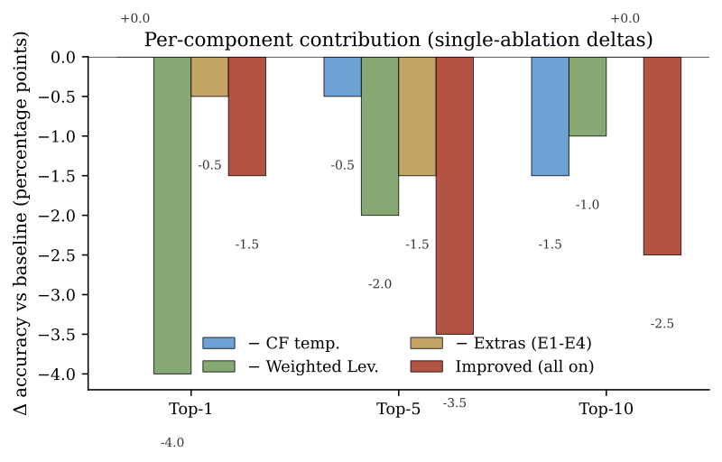
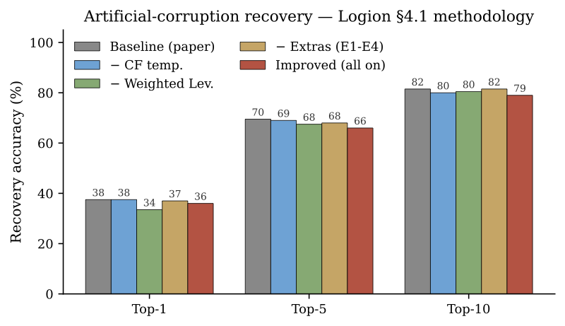

Logion with Weighted Levenshtein
[
source
] · extends
Logion
Changes
Ablation Results (
n
=200)
Per-component ablation on the §4.1 artificial-corruption protocol
Condition
Top-1
Top-5
McNemar
p
Baseline
37.5%
69.5%
—
All improvements
36.0%
66.0%
0.63
No CF-temperature
37.5%
69.0%
1.00
No weighted Lev
33.5%
67.5%
0.057
No extras
37.0%
68.0%
1.00


Variants Evaluation
Out-of-Corpus Deployment
← back